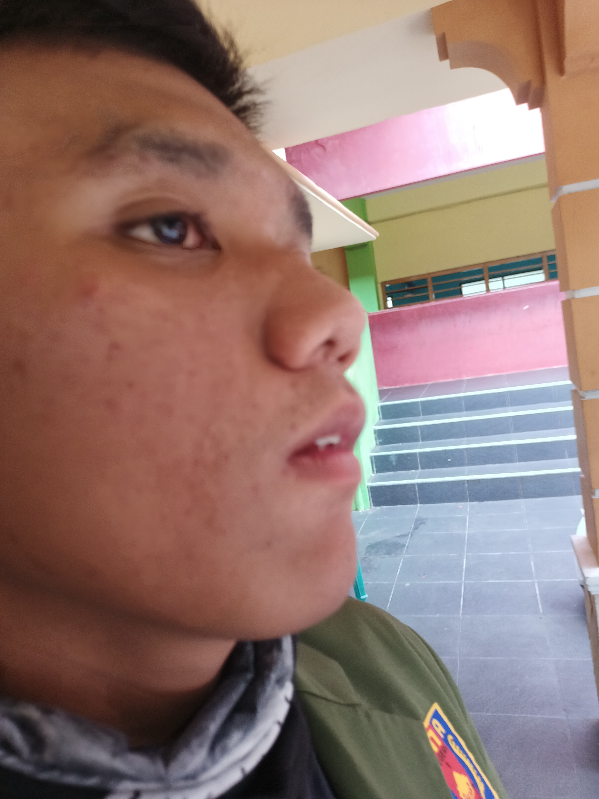
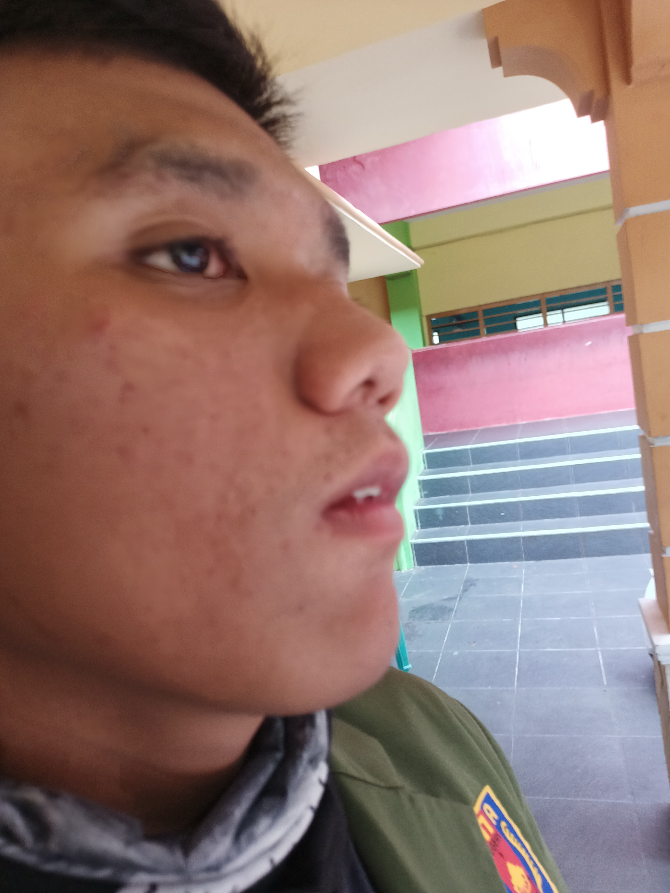

Nama : Raysa Muhammad Atmana
Tempat Tinggal,Tanggal Lahir : Banyuwangi,28-10-2006
Kelas : absen: XI-1,25
Hoby : sepeda
Nama : Gusti Ngurah Hayomi P.S
Tempat Tinggal,Tanggal Lahir : Banyuwangi,08-01-2007
Kelas : absen: XI-1,35
Hoby : Mencari tau

Tempat Tinggal,Tanggal Lahir : Banyuwangi,28-10-2006
Kelas : absen: XI-1,25
Hoby : sepeda
Tempat Tinggal,Tanggal Lahir : Banyuwangi,08-01-2007
Kelas : absen: XI-1,35
Hoby : Mencari tau